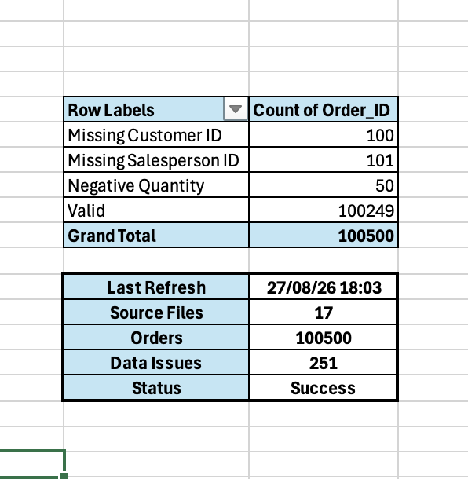
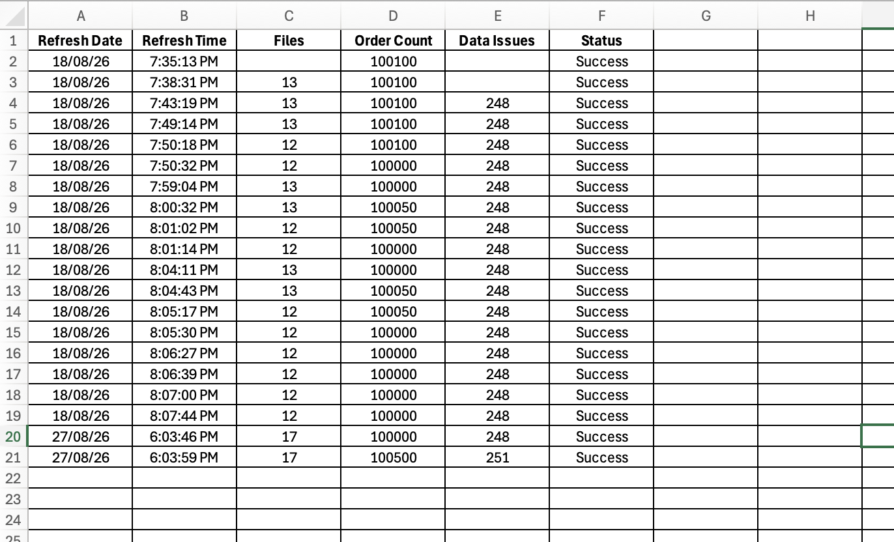

02 · PROJECT OVERVIEW
Project Overview
This project automates a recurring FMCG reporting workflow that would otherwise require repeated data preparation and report refreshing.
Incoming Excel files are processed through Power Query, consolidated into reporting data, and refreshed through a VBA-controlled workflow.
The process also provides visibility into refresh activity through status information and an audit log.
Raw Data
Monthly sales files arrive as the raw transactional input for the reporting workflow.
Master Data
Reference tables provide the product, customer, salesperson, and target information used to enrich the sales data.
Power Query Transformation
Power Query combines, cleans, transforms, and enriches the incoming sales data using the available master data.
Final Fact_Sales Dataset
The transformed data is consolidated into a reporting-ready Fact_Sales table that feeds the reporting workflow.
Final Dashboard
The cleaned and enriched dataset is presented through the final FMCG reporting dashboard.
Automated Refresh
A single refresh action runs the reporting workflow and updates the latest reporting output.
03 · THE PROBLEM
The Reporting Challenge
Recurring FMCG sales reporting can become time-consuming when new monthly files arrive regularly and the reporting process depends on repeated manual steps.
Each reporting cycle requires sales data to be consolidated with master data, transformed into a consistent structure, checked for data-quality issues, and prepared for management reporting. Without a repeatable workflow, these steps can introduce manual effort and make refreshes harder to monitor.
04 · DATA INGESTION
Data Intake
Each reporting cycle begins with new FMCG sales files arriving in a designated input folder.
Power Query connects to the folder and automatically brings the incoming files into the reporting workflow, allowing new monthly data to be incorporated without rebuilding the report from scratch.
05 · POWER QUERY
Power Query Transformation
Power Query forms the transformation layer between the incoming sales files and the final reporting dataset.
The workflow combines the incoming files, removes inconsistencies, standardizes fields and data types, validates the data, and enriches the sales records using the available master data.
06 · REPORTING MODEL
From Transformed Data to Reporting
The transformed Fact_Sales dataset becomes the single reporting-ready source for the FMCG reporting layer.
Excel reports and dashboards connect to this prepared dataset, allowing reporting outputs to update from the same underlying data structure instead of being manually rebuilt for each reporting cycle.
07 · VBA AUTOMATION
VBA Refresh Automation
VBA controls the reporting refresh process and connects the refresh action with status updates and refresh logging.
A single refresh action coordinates the workbook refresh, waits for the process to complete, updates the report status, and records the refresh activity for monitoring.
START
User initiates the reporting refresh.
REFRESH
VBA triggers the workbook's data refresh process.
WAIT
VBA waits for the refresh process to finish before continuing.
UPDATE
Refresh status and reporting information are updated.
LOG
The refresh activity is recorded in the refresh log.
VBA source should be connected from the project files here. No VBA source file is currently included in this project.The macro provides a single entry point for refreshing the reporting workflow and updating the associated status and logging information.
VBA source should be connected from the project files here. No VBA source file is currently included in this project.The relevant logic should show how the refresh is triggered, completed, reflected in status information, and recorded in the refresh log.
08 · REFRESH MONITORING
Refresh Status & Audit Log
The reporting workflow records each refresh so users can verify when the report was updated and whether the process completed successfully.
Refresh status information and the audit log provide a simple monitoring layer around the automated workflow, making it easier to identify successful refreshes and review the activity history.


09 · AUTOMATED WORKFLOW
End-to-End Reporting Workflow
INPUT
New FMCG sales files arrive in the designated input folder.
TRANSFORM
Power Query combines, cleans, standardizes, and enriches the incoming data.
MODEL
The transformed data is consolidated into the reporting-ready Fact_Sales dataset.
AUTOMATE
VBA controls the refresh process and coordinates the reporting workflow.
MONITOR
Refresh status and activity are recorded through the reporting log.
REPORT
The refreshed data powers the final FMCG reporting dashboard.
10 · DASHBOARD
Reporting Dashboard
The final reporting layer presents the transformed FMCG sales data through an interactive Excel dashboard designed for management reporting.
The dashboard brings together sales performance, regional results, product performance, targets, and data-quality information in a single reporting view.
Sales Performance
Track sales performance across regions, products, and reporting periods.
Target Analysis
Compare actual sales against targets to highlight performance gaps.
Data & Refresh Status
Monitor reporting freshness and review key data-quality checks.
11 · TESTING & VALIDATION
Testing the Workflow
The workflow was tested by introducing a new input file and verifying that the reporting process incorporated the new data correctly.
The test validates the core automation path: new data is added to the input folder, the workbook refresh is triggered, and the updated reporting output is checked.
Test with an additional file
Introduce a new sales file into the input folder without manually rebuilding the reporting workflow.
Run the automated refresh
Trigger the workbook refresh and allow Power Query and the reporting model to process the new input.
Check the result
Confirm that the new data is reflected in the reporting output and that the refresh status is recorded correctly.
12 · KEY TAKEAWAYS
Key Takeaways
Repeatable transformation
Power Query provides a repeatable transformation layer that combines, cleans, standardizes, and enriches incoming Excel data.
Coordinated workflow
VBA coordinates the workbook refresh process, connecting the reporting model refresh with the overall reporting workflow.
Recorded activity
The refresh log and status information provide visibility into refresh activity and help confirm whether the reporting process completed.
Ready for new inputs
The workflow is designed to be reused as new sales files arrive, reducing the need to rebuild the reporting process for each reporting cycle.
13 · BUSINESS IMPACT / CONCLUSION
From Manual Reporting to a Repeatable Workflow
This project demonstrates how Excel, Power Query, and VBA can be combined to turn a recurring FMCG sales reporting process into a structured and repeatable workflow.
Incoming sales files are ingested through a folder-based process, while Power Query combines, cleans, standardizes, and enriches the data using the supporting master tables.
The transformed data feeds the reporting model and dashboard, while VBA coordinates the refresh process and connects refresh execution with status and logging.
The result is a reporting workflow that can accommodate new input files, refresh the reporting output, and provide visibility into refresh activity without rebuilding the process for each reporting cycle.
A structured reporting workflow
Power Query provides the repeatable data transformation layer, while VBA coordinates refresh execution and reporting status. Together, they create a reusable Excel-based workflow for recurring sales reporting.14 · TECHNOLOGY
Technology
15 · GITHUB